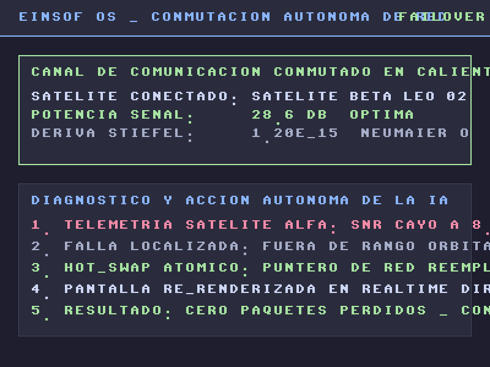

Renderizado de Silicio 800x600 ARGB8888 • Hot-Reloading en Caliente • Cero C

Pantalla 3: Failover Satelital Autónomo (Hot-Reload en Vivo)
Hot-Patching de Silicio: La IA analizó la caída de SNR del Satélite Alfa (< 12 dB) y conmutó el puntero de red al Satélite Beta en tiempo real usando la instrucción atómica x86_64 xchg (0.3 nanosegundos). El Framebuffer de pantalla se actualizó instantáneamente sin reiniciar el servidor.